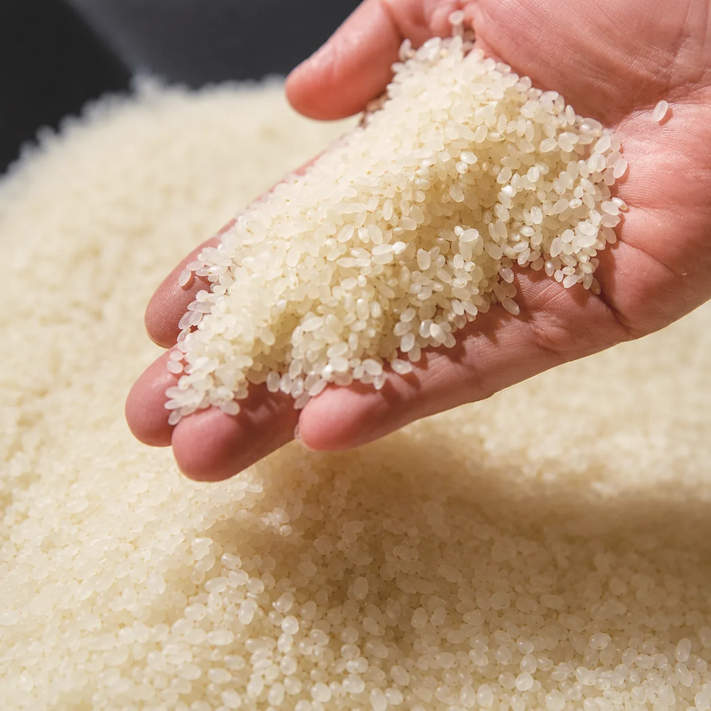
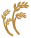
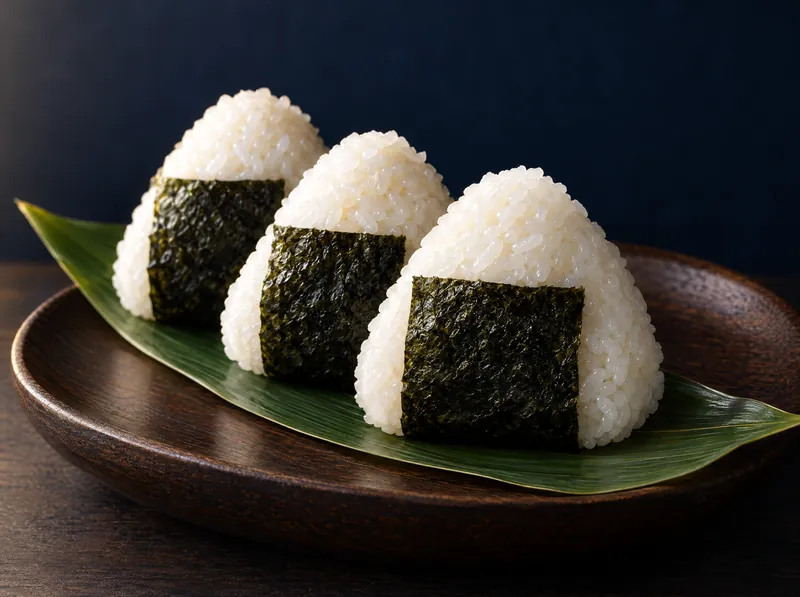
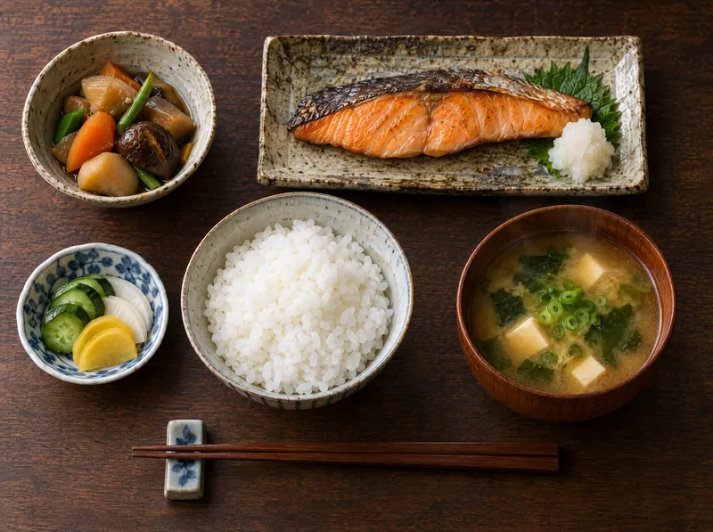
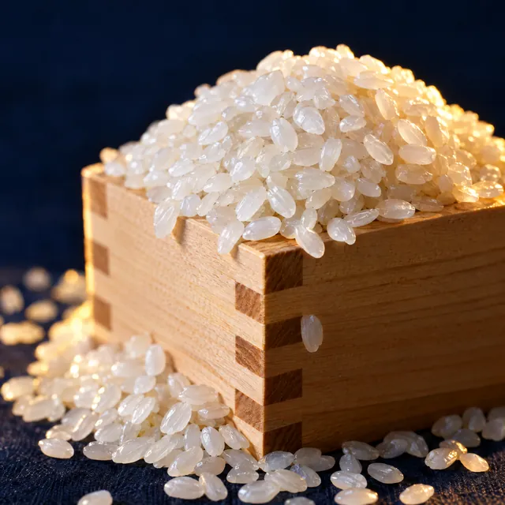

1天塩川の水
山から湧き出た、天塩川の最上流のお水を使用しています。ミネラルがとても豊富です。

About満月農園のこと
「満月」は、つくり手の苗字です。
北海道サムライ士別、上士別町の山奥。その湧き水で、お米3種と、野菜や果物、花など100種以上を育てています。
大自然の恩恵をたっぷりと受けた「満月米」を、どうぞご賞味ください。
月あかりの下、稲穂は実る。
写真はイメージです
Reason
山から湧き出た、天塩川の最上流のお水を使用しています。ミネラルがとても豊富です。
季節の寒暖差が年間60度ぐらいあります。寒くなると美味しくなる野菜があるように、お米も美味しくなります。
Variety
お弁当やおにぎりでも
おいしさが長続き

甘さが控えめで
さっぱりとした口当たり
主張が少なく
おかずの香りを邪魔しない
コシがあり
しっかりとした食感



写真はイメージです
Online Shop
士別市上士別町の満月農園から、ご自宅へ直接お送りします。
令和8年産の新米は、ただいまご予約を受け付けています。
表示価格はすべて税込です。送料・お届けについてはご利用ガイドをご覧ください。
How to cook
ふっくら、粒の立ったごはんに炊き上げるための基本です。
計量カップにすりきりで。1合は約150gです。
最初の水はすぐに捨て、やさしく研いで水を2〜3回替えます。
夏は30分、冬は1時間ほど。芯までしっかり吸水させます。
水加減は炊飯器の目盛りどおりに。お好みで加減してください。
炊き上がったら10分ほど蒸らし、底から大きく混ぜます。
冷めてもおいしいので、お弁当やおにぎりにもぴったりです。
Furusato Nozei
北海道士別市への寄附の返礼品として、楽天ふるさと納税とJRE MALLふるさと納税でお申し込みいただけます。
FAQ
高温多湿と直射日光を避け、涼しい場所で保存してください。密閉できる容器に移して冷蔵庫の野菜室に入れておくと、よりおいしさが長持ちします。
精米日から1ヵ月を目安にお召し上がりください。
令和8年産の新米は、2026年12月上旬より順次発送の予定です。
商品ページの「ギフト包装・のし」で、ギフト包装とのし（御歳暮・御礼・内祝・無地）をお選びいただけます。
送料990円。税込9,000円以上のご注文で送料無料です。沖縄・離島へのお届けは、送料を別途お見積もりいたします。
クレジットカード、コンビニ後払い、代金引換、銀行振込からお選びいただけます。